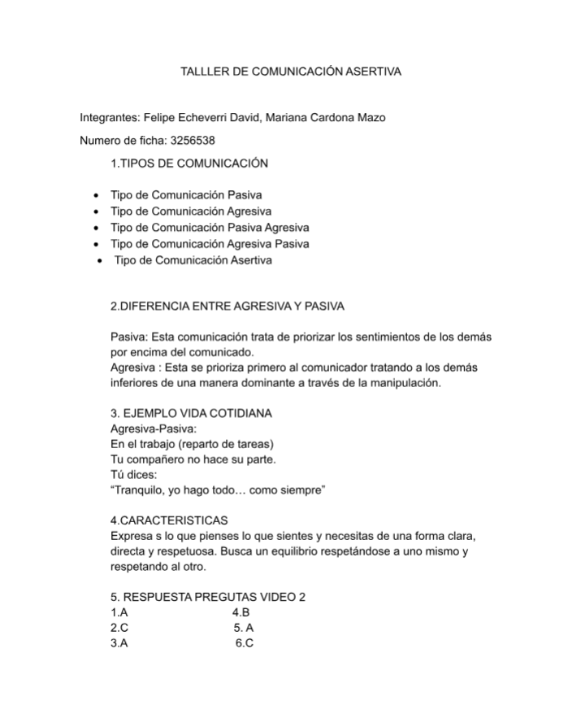
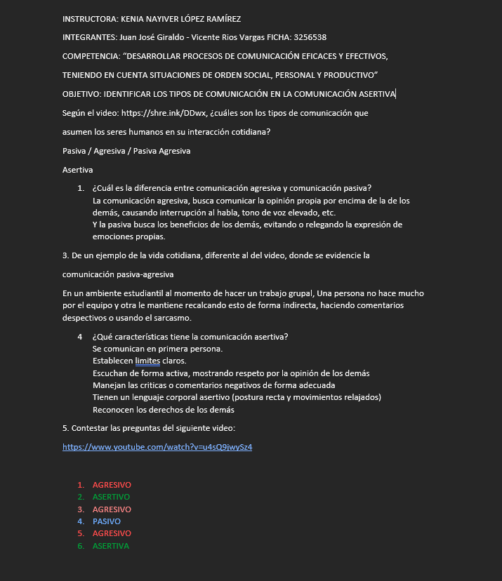
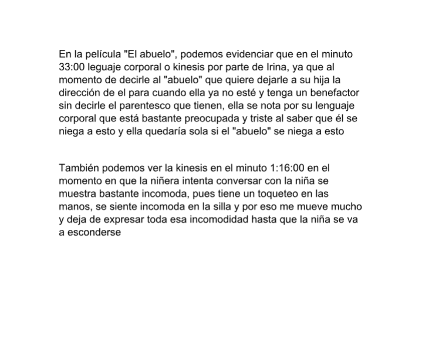
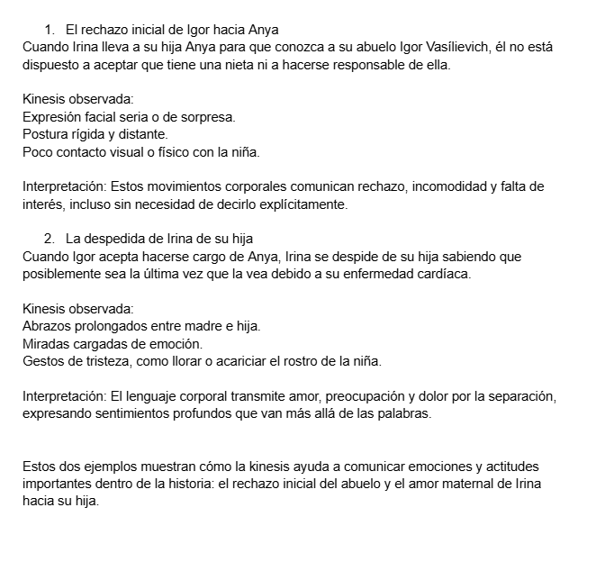

Efectiva (Asertiva)
Lenguaje en primera persona, tono calmado, contacto visual directo, escucha activa.
Centro de Servicios y Gestión Empresarial · Regional Antioquia · SENA
Un recorrido por lo aprendido durante el cuarto trimestre: lenguaje emotivo, comunicación no verbal y los retos que nos hicieron crecer como equipo.
La comunicación es mucho más que hablar o escribir: es el proceso por el cual las personas compartimos ideas, emociones e intenciones, y a través del cual construimos relaciones, acuerdos y comunidad. Durante este trimestre entendimos que comunicarse bien no depende solo de las palabras que usamos, sino también del tono, los gestos, el contexto y la forma en que escuchamos al otro.
Para nuestro equipo, la importancia de la comunicación está en que es la base de toda relación humana: sin ella no existirían los equipos de trabajo, las familias, ni las soluciones a los conflictos. Aprender sobre sus funciones y sus formas no verbales nos permitió ver con otros ojos algo que hacíamos todos los días sin detenernos a analizarlo.
Cómo identificar y diferenciar los estilos con los que expresamos lo que pensamos y sentimos frente a los demás.
Ver desarrollo →Cómo el lenguaje se convierte en el espejo del mundo interior del hablante y expresa sus emociones de forma subjetiva y espontánea.
Ver desarrollo →El estudio de los movimientos corporales, gestos, posturas y expresiones faciales como sistema de signos que complementa el lenguaje verbal.
Ver desarrollo →Estaba la sapa caramelo sentada en la orilla del río Cauca, en el peñasco más alto de la región, miraba a sus alrededores y veía a lo lejos un pequeño pueblo hecho de dulces, con sus habitantes hechos también de dulces. Estos también tenían unos vecinos hechos de una sustancia viscosa, como hechos de MOCO; al parecer, estos dos pueblos no se llevaban muy bien, pues se podía observar una gran muralla hecha de ESTACA, una por una alineadas, que separaba ambos pueblos.
La sapa caramelo fue muy curiosa y quiso investigar acerca del porqué. Fue primero al pueblo dulce, allí fue bien recibida, pues todos los habitantes parecían muy felices de ver a alguien parecido a ellos; le dieron mucha comida y se veía una soga con un NUDO. Le dieron un refresco que no tenía TAPA, y ella se preguntó por qué no tenía tapa aquella bebida. Ellos le respondieron que el único lugar en donde se fabricaban era en el pueblo de moco, pero como tenían una enemistad, no tenían ninguna ESPERANZA de volver a tener refrescos con tapas.
La sapa quiso ayudarlos a solucionar este problema tan grande que tenían, así que fue al pueblo de moco, donde no fue tan bien recibida: allí todo parecía tenebroso y oscuro, pero ella no tenía miedo, tenía que cumplir con su misión.
Estaba la sapa caramelo sentada en la orilla del río Cauca, en el peñasco más alto de la región, mirando la maravillosa tierra en la que se encontraba. De repente le cayó un MOCO de una persona que estaba en la zona; esta persona se encontraba llorando y moqueando, pues había pisado una ESTACA que estaba en el suelo.
La sapa caramelo quería ayudar a esta persona, a pesar de que le hubiera caído un moco. Se encontró con una cuerda atada con un NUDO en un árbol, junto con una TAPA de basura. La sapa caramelo le señaló la cuerda a la persona para que se agarrara, y la tapa para tener algo en qué golpear por el sufrimiento.
La sapa caramelo estuvo siempre acompañando a la persona, brindándole frases motivadoras y ESPERANZA. Estos factores, junto con la determinación de la persona, lograron que esta pudiera salir de la estaca e ir a buscar atención médica.


Frente a una misma situación, no todas las personas se comunican de la misma manera: la forma en que expresamos lo que pensamos, sentimos o necesitamos puede variar entre cinco grandes estilos. Conocerlos nos permite identificar cómo nos comunicamos habitualmente y, sobre todo, entender por qué algunos estilos fortalecen las relaciones mientras que otros las deterioran.
Estos estilos no son "etiquetas" fijas de las personas, sino patrones de comportamiento que cualquiera puede usar según el contexto, el nivel de confianza o el estrés del momento. El objetivo de estudiarlos es poder reconocerlos a tiempo y, cuando sea posible, elegir el estilo efectivo (asertivo) por ser el que respeta tanto los propios derechos como los de la otra persona.
Expresa ideas, sentimientos y necesidades de forma clara, directa y respetuosa, sin agredir ni someterse al otro.
Evita expresar lo que piensa o siente por miedo al conflicto, anteponiendo los deseos ajenos a los propios.
Impone su punto de vista sin respetar al otro, usando un tono hostil, amenazante o descalificador.
Disfraza el malestar bajo una actitud aparentemente pasiva, pero lo expresa de forma indirecta: ironía, sarcasmo o silencios cargados de reproche.
Comienza con una imposición directa y agresiva que, ante la resistencia del otro, se repliega hacia el silencio o la indiferencia para evitar asumir la confrontación.
Ante una misma situación —un compañero que entrega tarde su parte del trabajo— cada estilo respondería de una manera distinta.
"Necesito que entreguemos a tiempo, ¿qué pasó y cómo lo resolvemos juntos?"
"No, no importa, yo lo termino igual aunque me toque quedarme hasta tarde."
"¡Siempre haces lo mismo, eres un irresponsable y ya no cuento contigo!"
"Qué bien que algunos sí tienen tiempo de sobra para no entregar nada..."
"¡Esto es inaceptable, lo quiero ya!"... y luego deja de responder mensajes y se desentiende.
Lenguaje en primera persona, tono calmado, contacto visual directo, escucha activa.
Voz baja, evita el contacto visual, se disculpa en exceso, dice "sí" cuando piensa "no".
Voz elevada, interrumpe, culpa o amenaza, invade el espacio personal del otro.
Sarcasmo, comentarios indirectos, "olvidos" intencionales, doble mensaje verbal y no verbal.
Exige o amenaza al inicio y luego se retira, ignora o sabotea en silencio el acuerdo.
Los cuatro estilos no efectivos generan malentendidos, resentimiento o deterioro del vínculo.
Identificar estos cinco estilos nos ayuda a observar cómo nos comunicamos en el día a día —en el aula, en el trabajo en equipo o en casa— y a notar cuándo caemos en la pasividad, la agresividad o sus combinaciones. Practicar la comunicación efectiva no significa evitar el conflicto, sino afrontarlo con claridad, respeto y responsabilidad sobre lo que se dice.
Expresa emociones del emisor.
Comunicar sentimientos.
Subjetiva, expresiva, espontánea.
Emisor, mensaje, contexto.
Canciones, poesía, conversaciones.
Base de la conexión humana.
La función emotiva convierte el lenguaje en un espejo del mundo interior del hablante. No describe la realidad: la vive.
El emisor es el protagonista absoluto del mensaje emotivo.
Uso predominante del "yo" como eje del mensaje.
Refleja la experiencia interior del hablante.
Surge de manera natural en situaciones emocionales.
La expresión emocional permea todos los ámbitos de la comunicación humana, desde lo íntimo hasta lo artístico.
"Estoy muy feliz de verte."
"Te extraño cada día que pasa."
"Mi alma llora en silencio."
"Hoy fue un día difícil, pero sigo adelante."
Centrada en el contexto: informa sobre la realidad de forma objetiva. Ej.: "El agua hierve a 100 °C."
Centrada en el receptor: busca influir en su conducta con órdenes, peticiones o persuasión. Ej.: "¡Cierra la puerta!"
Centrada en el canal: inicia, mantiene o cierra el contacto comunicativo. Ej.: "¿Aló?", "¿Me escuchas?"
Centrada en el mensaje: resalta su forma estética con ritmo, rima o figuras literarias. Ej.: poesía, eslóganes.
Centrada en el código: usa el lenguaje para explicar o definir el lenguaje mismo. Ej.: "¿Qué significa 'efímero'?"
Roman Jakobson (1896–1982) fue un lingüista ruso, figura central del formalismo ruso y el estructuralismo. En 1960 propuso un modelo del acto comunicativo formado por seis elementos — emisor, receptor, mensaje, contexto, canal y código— y asoció a cada uno una función del lenguaje predominante: emotiva, apelativa, referencial, poética, fática y metalingüística.
→ Función emotiva
→ Función apelativa (conativa)
→ Función poética
→ Función referencial
→ Función fática
→ Función metalingüística
Para Jakobson, el emisor es el polo del acto comunicativo desde el cual surge el mensaje, y es precisamente a ese polo al que asoció la función emotiva (también llamada expresiva). Según su planteamiento, esta función está orientada directamente hacia el emisor y tiene como fin expresar de forma inmediata la actitud del hablante frente a aquello de lo que habla, sin que importe si esa actitud es real o fingida: lo que comunica es la impresión de una emoción. Por eso Jakobson señalaba las interjecciones ("¡Ay!", "¡Bah!", "¡Uf!") como la manifestación lingüística más pura de la función emotiva: no describen nada del mundo exterior, solo proyectan el estado interno de quien habla.
"La función emotiva o expresiva, centrada en el emisor, tiende a producir la impresión de una cierta emoción, verdadera o fingida." — Roman Jakobson
La kinesis, también conocida como cinésica, es la disciplina que estudia los movimientos corporales como formas de comunicación no verbal. Analiza cómo las expresiones faciales, los gestos, las posturas y otros movimientos del cuerpo transmiten información y contribuyen a la interpretación de los mensajes humanos (Birdwhistell, 1970).
El término "kinesics" fue introducido en la década de 1950 por el antropólogo Richard Birdwhistell, quien sostenía que los movimientos corporales funcionan de manera similar al lenguaje verbal, con patrones organizados y significados compartidos dentro de una cultura. Más adelante, Paul Ekman y Wallace Friesen demostraron que ciertas expresiones faciales son universales y reconocibles en distintas culturas (Ekman & Friesen, 1969).
Transmiten emociones como alegría, tristeza, ira, miedo, sorpresa y asco.
Movimientos de manos, cabeza o brazos que acompañan o sustituyen el lenguaje verbal.
Comunican actitudes, seguridad o desinterés, según estén erguidas o encorvadas.
Enfatizan ideas y organizan el discurso del orador.
Demuestra atención, interés y confianza durante la interacción.
Abrazos, sonrisas y gestos de afecto comunican cercanía sin necesidad de palabras.
El contacto visual y una postura abierta del docente favorecen la atención y comprensión.
Una postura segura y el contacto visual fortalecen la credibilidad en entrevistas y reuniones.
Expresiones faciales breves e involuntarias, de fracciones de segundo, que revelan emociones genuinas difíciles de ocultar o fingir (Ekman).
Estudia el uso y manejo del espacio personal y las distancias (íntima, personal, social, pública) durante la interacción (Hall, 1966).
Elementos vocales que acompañan el habla sin ser palabras: tono, volumen, ritmo y pausas que matizan el significado del mensaje.
Gestos con significado claro y compartido culturalmente que pueden sustituir palabras completas, como el pulgar arriba o el saludo con la mano.
La forma de vestir, las normas de protocolo y el tipo de saludo (apretón de manos, beso, inclinación) comunican estatus, respeto y contexto cultural.
La kinesis constituye una de las áreas más importantes del estudio de la comunicación no verbal: las expresiones faciales, los gestos, las posturas y el contacto visual desempeñan un papel fundamental en la interacción humana. Comprenderla nos permite interpretar mejor las intenciones y emociones de los demás, favoreciendo relaciones más efectivas en lo personal, lo educativo y lo laboral.


El reto sobre los Tipos de Comunicación nos puso frente a una situación concreta en la que debíamos identificar qué tipo de comunicación (verbal, no verbal, escrita, visual, etc.) era más adecuado según el contexto y el objetivo del mensaje. Esto nos exigió ponernos de acuerdo como equipo, escuchar distintos puntos de vista y argumentar nuestras decisiones con lo aprendido en clase.
Lo que más nos aportó este reto fue entender que ningún tipo de comunicación es "mejor" que otro de forma absoluta: todo depende del contexto, la audiencia y el propósito del mensaje. Trabajar en equipo para resolverlo también nos permitió aplicar, en la práctica, varias de las funciones del lenguaje y los elementos no verbales que estudiamos en las otras temáticas.
Integrante
Tecnología ADSO.
Encargado de la parte "Funciones del lenguaje"
Me llamo Vicente Rios Vargas, nací en Chile, tengo 18 años y vivo con mi madre en Copacabana, actualmente estoy en el quinto(5to) trimestre de una tecnología del SENA llamada Análisis y Desarrollo de Software (ADSO)
Me caracteriso por ser una persona muy tranquila y relajada,
Integrante
Tecnología ADSO.
Encargado de la parte "Comunicación no verbal"
Me llamo Felipe Echeverri y actualmente vivo con mis padres y mi hermana, estudio Analisis y Desarrollo de Software (ADSO) en el SENA, tengo 19 años y soy bastante alegre y sociable, me gusta pasar el rato viendo series y películas o jugando algun videojuego en mi computador. Me gusta mucho lo que estoy estudiando, quisiera vivir de esto algún dia y poder seguir mejorando en este ambito.
Lo más significativo aprendido sobre comunicación durante este trimestre.
Antes de este trimestre sabía que existían distintos tipos de comunicación (verbal, no verbal, escrita, visual) pero los usaba sin pensarlos, realmente nunca me había detenido a definir qué los diferenciaba ni a reconocerlos cuando aparecían en una conversación o en un gesto. Estudiar el lenguaje emotivo y la kinesis me dio las palabras y los criterios que me faltaban para identificar, por ejemplo, cuándo un gesto refuerza lo que digo y cuándo lo contradice. Lo que más me sorprendió fue darme cuenta de que llevaba años "leyendo" comunicación no verbal de forma intuitiva, sin saber que tenía nombre y estructura.
Yo también conocía de nombre los tipos de comunicación, pero confundía con facilidad sus límites: por ejemplo, no tenía claro dónde terminaba la función emotiva del lenguaje ni dónde empezaba, simplemente era "hablar con sentimiento". Trabajar la investigación sobre la kinesis me ayudó a identificar elementos como las posturas, el contacto visual o los gestos, y a entender que cada uno cumple una función concreta dentro de la comunicación. Lo que más valoro de este trimestre es haber pasado de un conocimiento superficial a poder explicar y reconocer cada tipo de comunicación en situaciones reales del reto y del trabajo en equipo. Pienso aplicar esto con las personas con las que me comunico a diario.